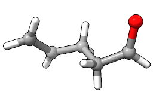

In order to study a reaction using computational methods, you must have the relevant structures. If you want to study a particular reaction with multiple different substrates, it may also be useful to ensure that atoms are in the same order in the reactants, products, intermediates, and transition state structures. When the atoms are in the same order, it becomes easier to, for example, put a methyl group on the same site in all your structures later.
In this tutorial, we'll build allyl vinyl ether and 4-pentenal, starting with the ether. To make editing these structures later a lot easier, we'll also try to keep the order of the atoms consistent in both structures.
To begin, open the tool for AaronTools structure
modification:
or run the command:
ui tool show "Structure Modification"
Now, switch to the "change element" tab on the tool window. This tab lets you change an atom's element or VSEPR shape. We'll start with the vinyl group and work our way around the structure. The first carbon atom ought to have a trigonal planar VSEPR shape. Find this on the "geometry" dropdown menu. These items are sorted by number of bonds, so trigonal planar will be a few entries above the default tetrahedral on this list. Once you've got that selected, press with selected. You should now have a trigonal planar CH3 on the graphics window.
Continue building by picking one of the hydrogens and replacing it with another trigonal planar carbon. You can select with your mouse by CTRL-clicking or command-clicking on the atom. Pressing will replace these atoms with a trigonal planar carbon.
It is very likely that the CH2 groups will not be in the same plane. To rectify this, go over to the "Right Mouse" tab on the ChimeraX toolbar and pick "Bond rotation". Starting a right-click drag on the C=C bond and moving your mouse up and down the screen will rotate the bond.
Let's move on to the oxygen. Back on the tool window, click the "element" option's "C" to open a periodic table. Select oxygen. Change the "geometry" option to "tetrahedral (2 bonds)", which will be a few entries above trigonal planar. Finally, select one of the hydrogens and press .
Switch the selected element back to carbon by clicking on the element selector and picking carbon on the periodic table. Also change the "geometry" option back to "tetrahedral". Select the hydrogen on the oxygen and turn it into carbon.
Switch geometry back to "trigonal planar" and add the last two atoms. Rotate bonds as necessary to eliminate any close contacts.
This structure should now be saved to a file. You can do this in a number of ways: on the ribbon at the top of your screen, the "Save" floppy disk on the "Home" tab of the ChimeraX toolbar, the save command, or prepare an optimization job using the input file builder .
Instead of starting this structure from scratch,
we'll just be editing the bonds and VSEPR geometry
of our allyl vinyl ether. This has the benefit of
keeping all the atoms in the same order, so if
we want to, for example, look at this reaction
using various substrates later, we'll be able to
build them quickly. You can use either the "Bond
Editor" tool or the "Bond" mouse mode, which
can be activated on the "Right Mouse" tab of the
ChimeraX toolbar. The bond editor tool can be access via:
or the command:
ui tool show "Bond Editor"
We'll add a bond between the CH2 groups on either end of the allyl vinyl ether. Use the bond rotation right mouse mode to rotate torsions so that the two ends are closer together. Select the carbons of the two CH2's and press on the bond editor tool. Next, select the bond between the oxygen and the CH2 next to it. Press to remove this bond.
If you're using the "Bond" mouse mode, you can click and drag from one atom to another to draw a bond, or click a bond to delete it.
At the moment, this structure isn't looking very good. But that will buff out quickly. Switch back to the structure modification tool. One at a time, select the carbon atoms that now have four bonds and set their VSEPR geometry to tetrahedral. That is, select "C" as the element and "tetrahedral" as the geometry on the "change element" tab of the tool and press with either of the carbon atoms selected. Next, select the CH2 on the end and set its VSEPR geometry to trigonal planar. The structure should now look more like 4-pentenal, and can be saved as before.
We have basically pretended our allyl vinyl ether went through a transition state structure in order to make our 4-pentenal structure. Note that there are multiple possible (at least two reasonable) transition state structures for a Claisen rearrangement. For a plain allyl vinyl ether, these look like mirror images of each other and do not lead to different products. However, the transition state structures could lead to different products if we start adding substituents.
Although we stuck to the "change element" features of the structure modification tool to build allyl vinyl ether, we could have easily used the "substitute" utility or the "Change Element" mouse mode as well. These, however, will be left as an excercise for the reader.